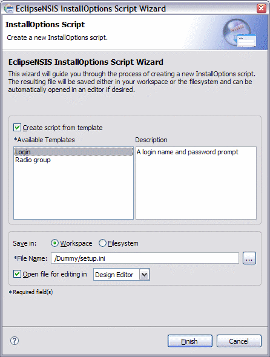

InstallOptions Script Wizard
The InstallOptions script wizard helps create a new InstallOptions script. The resulting script file is saved in the Eclipse Workspace and can be automatically opened using either the Design Editor or the Source Editor if desired. The Advanced button can be used to link the script to a pre-existing file in the filesystem (see the New File Wizard documentation for more details). For further information on InstallOptions scripts, please consult the InstallOptions Readme.
The script wizard can be accessed by using the Eclipse Workbench New button or menu and selecting the Other... item.

Previous | Contents | Next
Copyright © 2004, 2005 Sunil Kamath (IcemanK).